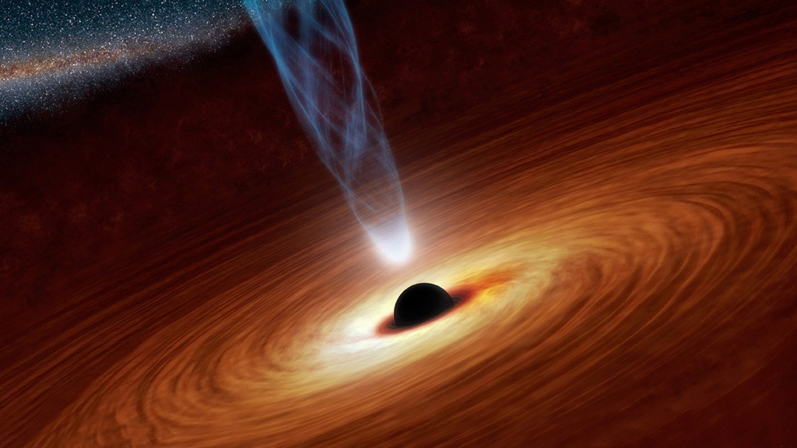

黑洞 ，宇宙空间内存在的一种天体。黑洞 的引力很大，使得视界内的逃逸速度大于光速。
1916年，德国天文学家卡尔·史瓦西（Karl Schwarzschild，1873～1916年）通过计算得到了爱因斯坦引力场方程的一个真空解，
这个解表明，如果将大量物质集中于空间一点，其周围会产生奇异的现象，即在质点周围存在一个界面——“视界”一旦进入这个界面，
即使光也无法逃脱。这种“不可思议的天体”被美国物理学家约翰·阿奇博尔德·惠勒（John Archibald Wheeler）命名为“黑洞”。
“黑洞是时空曲率大到光都无法从其视界逃脱的天体”。（电磁波）也逃脱不出。黑洞无法直接观测，但可以借由间接方式得知其存
在与质量，并且观测到它对其他事物的影响。借由物体被吸入之前的因高热而放出和γ射线的“边缘讯息”，可以获取黑洞存在的讯息
。推测出黑洞的存在也可借由间接观测恒星或星际云气团绕行轨迹取得位置以及质量。
- 演化过程
黑洞就是中心的一个密度无限大、时空曲率无限高、体积无限小，热量无限大的奇点和周围一部分空空如也的天区，这个天区范围之内不可见。依据阿尔伯特-爱因斯坦的相对论，当一颗垂死恒星崩溃，它将聚集成一点，这里将成为黑洞，吞噬邻近宇宙区域的所有光线和任何物质。
黑洞的产生过程类似于中子星的产生过程：某一个恒星在准备灭亡，核心在自身重力的作用下迅速地收缩，塌陷，发生强力爆炸。当核心中所有的物质都变成中子时收缩过程立即停止，被压缩成一个密实的星体，同时也压缩了内部的空间和时间。但在黑洞情况下，由于恒星核心的质量大到使收缩过程无休止地进行下去，连中子间的排斥力也无法阻挡。中子本身在挤压引力自身的吸引下被碾为粉末，剩下来的是一个密度高到难以想象的物质。由于高质量而产生的引力，使得任何靠近它的物体都会被它吸进去。
也可以简单理解为：通常恒星最初只含氢元素，恒星内部的氢原子核时刻相互碰撞，发生聚变。由于恒星质量很大，聚变产生的能量与恒星万有引力抗衡，以维持恒星结构的稳定。由于氢原子核的聚变产生新的元素——氦元素，接着，氦原子也参与聚变，改变结构，生成锂元素。如此类推，按照元素周期表的顺序，会依次有铍元素、硼元素、碳元素、氮元素等生成，直至铁元素生成，该恒星便会坍塌。这是由于铁元素相当稳定，参与聚变时释放的能量小于所需能量，因而聚变停止，而铁元素存在于恒星内部，导致恒星内部不具有足够的能量与质量巨大的恒星的万有引力抗衡，从而引发恒星坍塌，最终形成黑洞。说它“黑”，是因为它产生的引力使得它周围的光都无法逃逸。跟中子星一样，黑洞也是由质量大于太阳质量好几十甚至几百倍以上的恒星演化而来的。
当一颗恒星衰老时，它的热核反应已经耗尽了中心的燃料，由中心产生的能量已经不多了。这样，它再也没有足够的力量来承担起外壳巨大的重量。所以在外壳的重压之下，核心开始坍缩，物质将不可阻挡地向着中心点进军，直到最后形成体积接近无限小、密度几乎无限大的星体。而当它的半径一旦收缩到一定程度（一定小于史瓦西半径），质量导致的时空扭曲就使得即使光也无法向外射出——“黑洞”就诞生了。
- 吸积
黑洞通常是因为它们聚拢周围的气体产生辐射而被发现的，这一过程被称为吸积。高温气体辐射热能的效率会严重影响吸积流的几何与动力学特性。已观测到了辐射效率较高的薄盘以及辐射效率较低的厚盘。当吸积气体接近中央黑洞时，它们产生的辐射对黑洞的自转以是中央延展物质系统的流动。吸积是天体物理中最普遍的过程之一，而且也正是因为吸积才形成了我们周围许多常见的结构。在宇宙早期，当气体朝由暗物质造成的引力势阱中心流动时形成了星系。即使到了今天，恒星依然是由气体云在其自身引力作用下坍缩碎裂，进而通过吸积周围气体而形成的。行星（包括地球）也是在新形成的恒星周围通过气体和岩石的聚集而形成的。当中央天体是一个黑洞时，吸积就会展现出它最为壮观的一面。黑洞除了吸积物质之外，还通过霍金蒸发过程向外辐射粒子。
- 蒸发
由于黑洞的密度极大，根据公式我们可以知道密度=质量/体积，为了让黑洞密度无限大，而黑洞的质量不变，那就说明黑洞的体积要无限小，这样才能成为黑洞。黑洞是由一些恒星“灭亡”后所形成的死星，它的质量极大，体积极小。但黑洞也有灭亡的那天，按照霍金的理论，在量子物理中，有一种名为“隧道效应”的现象，即一个粒子的场强分布虽然尽可能让能量低的地方较强，但即使在能量相当高的地方，场强仍会有分布，对于黑洞的边界来说，这就是一堵能量相当高的势垒，但是粒子仍有可能出去。
霍金还证明，每个黑洞都有一定的温度，而且温度的高低与黑洞的质量成反比例。也就是说，大黑洞温度低，蒸发也微弱；小黑洞的温度高蒸发也强烈，类似剧烈的爆发。相当于一个太阳质量的黑洞，大约要1x10^66年才能蒸发殆尽；相当于一颗小行星质量的黑洞会在1x10^-21秒内蒸发得干干净净。
- 毁灭
黑洞会发出耀眼的光芒，体积会缩小，甚至会爆炸，会喷射物体，发出耀眼的光芒。当英国物理学家斯蒂芬·威廉·霍金于1974年做此预言时，整个科学界为之震动。
霍金的理论是受灵感支配的思维的飞跃，他结合了广义相对论和量子理论，他发现黑洞周围的引力场释放出能量，同时消耗黑洞的能量和质量。
假设一对粒子会在任何时刻、任何地点被创生，被创生的粒子就是正粒子与反粒子，而如果这一创生过程发生在黑洞附近的话就会有两种情况发生：两粒子湮灭、一个粒子被吸入黑洞。“一个粒子被吸入黑洞”这一情况：在黑洞附近创生的一对粒子其中一个反粒子会被吸入黑洞，而正粒子会逃逸，由于能量不能凭空创生，我们设反粒子携带负能量，正粒子携带正能量，而反粒子的所有运动过程可以视为是一个正粒子的为之相反的运动过程，如一个反粒子被吸入黑洞可视为一个正粒子从黑洞逃逸。这一情况就是一个携带着从黑洞里来的正能量的粒子逃逸了，即黑洞的总能量少了，而爱因斯坦的质能方程E=mc^2表明，能量的损失会导致质量的损失。
当黑洞的质量越来越小时，它的温度会越来越高。这样，当黑洞损失质量时，它的温度和发射率增加，因而它的质量损失得更快。这种“霍金辐射”对大多数黑洞来说可以忽略不计，因为大黑洞辐射的比较慢，而小黑洞则以极高的速度辐射能量，直到黑洞的爆炸。
据英国媒体报道，一项新的理论指出黑洞的死亡方式可能是以转变为白洞的方式进行的。理论上来说，白洞在行为上恰好是黑洞的反面——黑洞不断吞噬物质，而白洞则不断向外喷射物质。 这一发现最早是由英国某杂志网站报道的，其理论依据是晦涩的量子引力理论。
恒星的时空扭曲改变了光线的路径，使之和原先没有恒星情况下的路径不一样。光在恒星表面附近稍微向内偏折，在日食时观察远处恒星发出的光线，可以看到这种偏折现象。当该恒星向内坍塌时，其质量导致的时空扭曲变得很强，光线向内偏折得也更强，从而使得光子从恒星逃逸变得更为困难。对于在远处的观察者而言，光线变得更黯淡更红。最后，当这恒星收缩到某一临界半径（史瓦西半径）时，其质量导致时空扭曲变得如此之强，使得光向内偏折得也如此之强，以至于光也逃逸不出去 。这样，如果光都逃逸不出来，其他东西更不可能逃逸，都会被拉回去。也就是说，存在一个事件的集合或时空区域，光或任何东西都不可能从该区域逃逸而到达远处的观察者，这样的区域称作黑洞。将其边界称作事件视界，它和刚好不能从黑洞逃逸的光线的轨迹相重合。
与别的天体相比，黑洞十分特殊。人们无法直接观察到它，科学家也只能对它内部结构提出各种猜想。而使得黑洞把自己隐藏起来的的原因即是弯曲的时空。根据广义相对论，时空会在引力场作用下弯曲。这时候，光虽然仍然沿任意两点间的最短光程传播，但相对而言它已弯曲。在经过大密度的天体时，时空会弯曲，光也就偏离了原来的方向。
在地球上，由于引力场作用很小，时空的扭曲是微乎其微的。而在黑洞周围，时空的这种变形非常大。这样，即使是被黑洞挡着的恒星发出的光，虽然有一部分会落入黑洞中消失，可另一部分光线会通过弯曲的空间中绕过黑洞而到达地球。观察到黑洞背面的星空，就像黑洞不存在一样，这就是黑洞的隐身术。
更有趣的是，有些恒星不仅是朝着地球发出的光能直接到达地球，它朝其它方向发射的光也可能被附近的黑洞的强引力折射而能到达地球。这样我们不仅能看见这颗恒星的“脸”，还同时看到它的“侧面”、甚至“后背”，这是宇宙中的“引力透镜”效应。
这张红外波段图像拍摄的是我们所居住银河系的中心部位，所有银河系的恒星都围绕银心部位可能存在的一个超大质量黑洞公转。 据美国太空网报道，一项新的研究显示，宇宙中最大质量的黑洞开始快速成长的时期可能比科学家原先的估计更早，并且仍在加速成长。
一个来自以色列特拉维夫大学的天文学家小组发现，宇宙中最大质量黑洞的首次快速成长期出现在宇宙年龄约为12亿年时，而非之前认为的20~40亿年。天文学家们估计宇宙的年龄约为138.2亿年。
同时，这项研究还发现宇宙中最古老、质量最大的黑洞同样具有非常快速的成长。有关这一发现的详细情况发表在《天体物理学报》杂志上。
如果黑洞足够大，宇航员会开始觉察到拉着他脚的重力比拉着他头的重力更强大，这种吸引力拖着他无情地向下落，重力差会迅速加大而将他撕裂（拉伸线），最终他的遗体会被分解而落入黑洞那无限致密核心。
普金斯基和他的两个学生艾哈迈德·艾姆哈里、詹姆斯·萨利，加上该校的另一位弦理论学家唐纳德·马洛夫一起，对这一事件进行了重新计算。根据他们的计算，却呈现出完全不同的另一番场景：量子效应会把事件视界变成沸腾的粒子大漩涡，任何东西掉进去都会撞到一面火焰墙上而被瞬间烤焦。
美国宇航局有关一个超大质量黑洞及其周围物质盘，炙热的物质团（一个呈粉红色，一个呈黄色）每一个的体积都与太阳相当，环绕距离黑洞较近的轨道运行。科学家认为所有大型星系中心都存在超大质量黑洞。黑洞一直在吞噬被称之为“活跃星系核”的物质。由于被明亮并且温度极高的下落物质盘环绕，黑洞的质量很难确定。根据刊登在《自然》杂志上的一篇研究论文，基于对绕黑洞运行物质旋转速度的计算结果，37个已知星系中心黑洞的质量实际上低于此前的预计。
- 黑洞并不存在？
相关论文分别发表在著名的预印本网站ArXiv和《物理快报B》杂志上。
“得出这个结论后，即便我本人都感到十分震撼。”提出这一理论的美国北卡罗来纳大学教堂山分校理论物理学教授劳拉·梅尔西尼—霍顿这样描述自己的感受。她说：“科学家们研究这个问题已经超过了50年，而这个解决方案给了我们许多新的思考。”
1974年，霍金通过量子力学的方法得出结论：黑洞不仅能够吸收黑洞外的物质，同样也能以热辐射的方式向外“吐出”物质。而这种量子力学现象，就被称为霍金辐射。
物理学家组织网2014年9月25日（北京时间）报道称，新研究中梅尔西尼—霍顿描述了一种全新的方案。她和霍金都同意，当恒星因自身的引力发生坍塌时会产生霍金辐射。但梅尔西尼—霍顿认为，发出这种辐射后，恒星的质量也会不断地发生损失。正因为如此，当这些恒星坍缩时就不可能达到形成黑洞所必须的质量密度。她认为，垂死的恒星在发生最后一次膨胀后，就会爆炸，然后消亡，奇点永远不会形成，黑洞视界也不会出现。根本就不会存在像黑洞这样的东西。
其实早在今年年初，霍金就曾通过论文指出在经典理论中黑洞是不存在的，他承认自己最初有关视界的认识是有缺陷的，并提出了新的“灰洞”理论。该理论认为，物质和能量在被黑洞困住一段时间以后，又会被重新释放到宇宙中。
黑洞这一定义在经过漫长的时间推测后，已经慢慢被人们所接受。然而霍金今年年初发文否认黑洞的存在，取而代之提出了“灰洞”理论，这在物理学界掀起了不小的波澜。如今，梅尔西尼—霍顿直截了当地称“根本就不会存在像黑洞这样的东西”，这无疑成为又一枚重磅炸弹——尽管梅尔西尼—霍顿远不及霍金出名。当然，想以一己之力推翻既有的理论并不那么容易，需要更多有说服力的证据加以佐证。
- 物理性质划分
根据黑洞本身的物理特性质量，角动量，电荷划分，可以将黑洞分为五类。
不旋转不带电荷的黑洞：它的时空结构于1916年由史瓦西求出，称史瓦西黑洞。
不旋转带电黑洞：称R-N黑洞。时空结构于1916至1918年由赖斯纳（Reissner）和纳自敦（Nordstrom）求出。
旋转不带电黑洞：称克尔黑洞。时空结构由克尔于1963年求出。
一般黑洞：称克尔-纽曼黑洞。时空结构于1965年由纽曼求出。
双星黑洞：与其他黑洞彼此之间相互绕转的黑洞。
- 克尔纽曼黑洞
转动且带电荷的黑洞，叫做克尔--纽曼黑洞。这种结构的黑洞视界和无限红移面会分开，而且视界会分为两个（外视界r+和内视界r-），无限红移面也会分裂为两个（rs+和rs-） 。外视界和无限红移面之间的区域叫做能层，有能量储存在那里。越过外无限红移面的物体仍有可能逃离黑洞，这是因为能层还不是单向膜区。
（其中，M、J、Q分别代表黑洞的总质量、总角动量和总电荷。a=J/Mc为单位质量角动量）
单向膜区内，r为时间，s是空间。穿过外视界进入单向膜区得物体，将只能向前，穿过内视界进入黑洞内部。内视界以里的区域不是单向膜区，那里有一个“奇环”，也就是时间终止的地方。物体可以在内视界内自由运动，由于奇环产生斥力，物体不会撞上奇环，不过，奇环附近有一个极为有趣的时空区，在那里存在“闭合类时线”，沿这种时空曲线运动的物体可以不断地回到自己的过去。